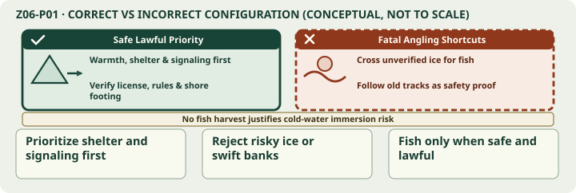

Z06-P01 · Hunting and fishing · Adapted historical material
Fishing Is Never the First Survival Priority
Keep warmth, shelter, water, and rescue signaling strictly ahead of risky angling or unverified ice access.
When it applies · Winter and open-water emergencies where fishing competes with life-safety decisions.
Equipment · Appropriate flotation/cold gear, current license, lawful shore access only.

Actions
- Keep shelter, dry insulation, water, and rescue signaling ahead of food gathering because no fish harvest offsets cold-water immersion or hypothermia.[H01, H18, T01]
- Choose lawful open-water shore access only when weather, footing, and current Minnesota DNR rules permit rather than venturing onto unverified ice.[H01, H18, X03]
- Check lake-specific fishing regulations, license requirements, and waterbody consumption advisories before planning any angling activity.[H01, H04]
Failure recognition · Treating tracks on ice or visible fish as permission to cross thin ice leads to rapid fatal cold-water immersion.[H18, X03]
Verify · Party remains on stable ground, emergency priorities are secured, and angling proceeds only with verified lawful access and gear.[H01, H18]
Stop or change course · Stop angling plans immediately whenever ice is unverified, wind or lightning builds, or cold stress begins.[H18, X03]
Evidence and editorial notes
- H01 · Minnesota DNR · Minnesota Fishing Regulations (Current web edition)
- Section: Licensing, seasons, limits, and waterbody-specific rules · Conditions: Minnesota angling across inland, border, and designated waters
Support: Anglers must hold a valid license unless explicitly exempt and verify current season dates, possession limits, size slots, and special waterbody rules before fishing.
Limitations: Regulations change annually and differ on border waters, trout streams, and tribal/ceded territories; no emergency creates an automatic legal exemption. · Conflicting evidence: None noted.
Editorial note: Establishes Z06 fishing authority gate. · Specialist reviewer: Minnesota DNR fisheries and legal reviewer
Primary source · checked 2026-11-25 - H04 · Minnesota Dept. of Health · Fish Consumption Guidance and Waterbody Advisories (Current web edition)
- Section: Waterbody-specific fish consumption advisories (mercury, PFAS, PCBs) · Conditions: Consuming Minnesota caught freshwater fish
Support: MDH issues species-, size-, and waterbody-specific meal-frequency limits for mercury, PCBs, and PFAS, with stricter limits for pregnant/nursing people and children under 15.
Limitations: Visual fish health and water clarity cannot detect mercury, PFAS, or PCBs; check current MDH waterbody lookup before eating caught fish. · Conflicting evidence: None noted.
Editorial note: Mandatory Z06 public-health fish advisory gate. · Specialist reviewer: Public-health toxicologist and MDH reviewer
Primary source · checked 2026-11-25 - H18 · Minnesota DNR · Waterfowl Hunting and Federal Migratory Bird Rules (Current web edition)
- Section: Waterfowl cold-water capsizing and non-toxic shot compliance · Conditions: Wetland and open-water fall waterfowl environments
Support: Cold-water immersion, overloaded boats, and wading drop-offs cause severe fatalities; wear flotation, check forecasts, and verify federal non-toxic shot and species limits.
Limitations: Emergencies and weather shifts override harvest goals; stay ashore in high wind or unverified ice. · Conflicting evidence: None noted.
Editorial note: Reconciles B013 P15-P16 with Z06 water/ice limits. · Specialist reviewer: Water-safety and wildlife reviewer
Primary source · checked 2026-11-25 - T01 · American Red Cross · First Aid Steps (current web edition)
- Section: First Aid Steps > Check the scene; check the person · Conditions: Lay responder in United States; assess safety before contact
Support: Check scene safety, responsiveness, breathing and immediately life-threatening conditions.
Limitations: Lay guidance does not replace advanced clinical or rescue protocols. · Conflicting evidence: None; universal first-response opening gate.
Editorial note: Anchors scene-safety-first rule across Z01. · Specialist reviewer: EMS and wilderness medicine
Primary source · checked 2026-11-24 - X03 · NWS · Cold Water Hazards and Safety (current web edition)
- Section: Cold Water Hazards > 1-10-1 Principle and Survival Actions · Conditions: Unexpected immersion in cold lakes, rivers, coastal or marine waters
Support: Protect the airway, use flotation, get out safely if possible, and prioritize rescue. The 1-10-1 mnemonic is descriptive and does not establish deadlines or survival times.
Limitations: Exact individual survival minutes vary widely with body size, clothing, sea state and water temperature. · Conflicting evidence: None; aligns with MN-COLDW and USCG guidance.
Editorial note: Anchors cold-water immersion decision thresholds in Z12. · Specialist reviewer: Cold-water rescue and emergency medicine
Primary source · checked 2026-11-24
Source lineage · Adapted historical material (B013-P15 fishing decisions) · Classification · Adapted historical material.